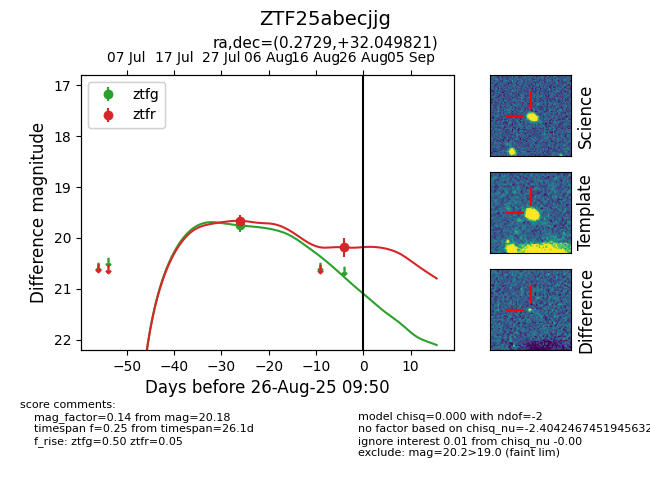

Target ZTF25abecjjg at 2025-08-26 09:50, see:
FINK: fink-portal.org/ZTF25abecjjg
Lasair: lasair-ztf.lsst.ac.uk/objects/ZTF25abecjjg
ALeRCE: alerce.online/object/ZTF25abecjjg
alt names
ZTF25abecjjg (ztf,fink)
coordinates:
equatorial (ra, dec) = (0.2729,+32.04982)
galactic (l, b) = (110.6650,-29.61985)
photometry
last ztfg=19.75, ztfr=20.18
1 ztfg, 2 ztfr detections
